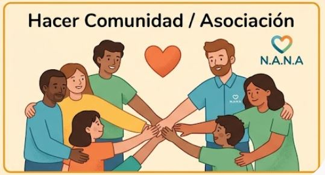

Os ayudamos a entender el diagnóstico, a pedir las ayudas a las que tenéis derecho y a encontrar los recursos que vuestro hijo o hija necesita. Con calma, con cercanía y sin papeleo en solitario.

Es normal sentirse perdido. Desde N.A.N.A. os acompañamos en todo momento, a vuestro ritmo y sin que tengáis que hacerlo solos.
Por teléfono, WhatsApp o el formulario. Contadnos vuestra situación con vuestras palabras.
Vemos juntos qué ayudas y recursos os corresponden según la edad, el diagnóstico y vuestra situación familiar.
Preparamos la documentación con vosotros y seguimos cada trámite hasta el final.
Muchas familias no piden ayudas porque no saben que existen o porque el proceso abruma. Os explicamos requisitos, plazos y documentos.
Responded unas preguntas y veréis las ayudas que encajan con vuestra situación, dónde se piden y, cuando esté disponible, un vídeo que lo explica paso a paso.
La puerta de entrada a muchas otras ayudas y beneficios fiscales.
Por ejemplo:
Valoración del grado y prestaciones económicas o de servicios asociadas.
Por ejemplo:
Ayudas para alumnado con necesidad específica de apoyo educativo y recursos en el centro.
Por ejemplo:
Cómo acceder a los servicios de atención precoz (CDIAP) y qué esperar de ellos.
Por ejemplo:
Prestaciones por hijo a cargo, deducciones en la renta y otras ventajas para la familia.
Por ejemplo:
Os avisamos de convocatorias abiertas para que no se os pase ninguna fecha.
Por ejemplo:
N.A.N.A. nace de familias que han vivido lo mismo que vosotros. Sabemos lo que cuesta, y por eso compartimos lo aprendido.
Somos una asociación de Sant Boi de Llobregat formada por familias del municipio. Conocemos sus escuelas, sus servicios y sus recursos, y trabajamos para que ninguna familia de la ciudad tenga que recorrer sola el camino del autismo.
Talleres, encuentros y actividades que hemos organizado. Pulsa en cada uno para verlo en Instagram.
Hazte socio, colabora como voluntario o haz un donativo. Cada aportación se convierte en acompañamiento.
Escribidnos sin compromiso. Os responderemos con calma y en el idioma que prefiráis.